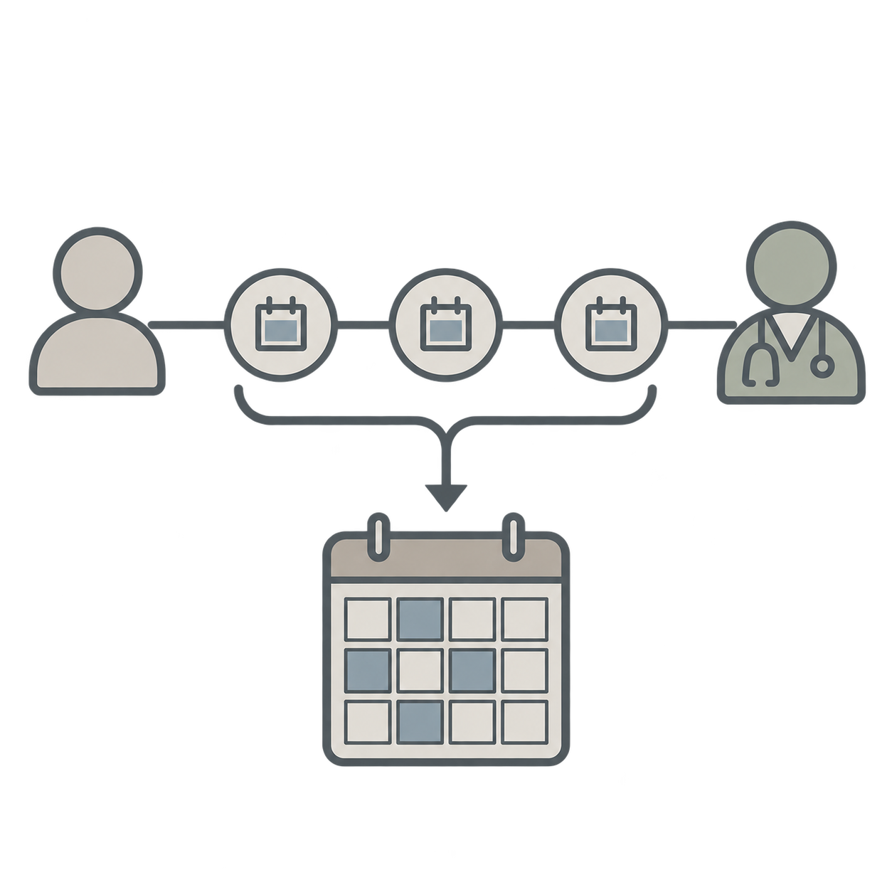

Improving access to outpatient care
Working paper
Estimating Provider Episodes as Operational Units of Outpatient Access
In preparation

How can clinics make room for new patients while maintaining care for returning patients? I analyze outpatient visit histories and develop capacity-planning models to support that decision.
My work involves processing 4.8 million outpatient encounters to construct 1.27 million provider episodes, using more than 80 source datasets totaling 250 GB. These episodes help characterize patient visit patterns, cancellations, and continuity of care.
- Large-scale data analysis
- Survival analysis
- Optimization
- Simulation
Presentations
- INFORMS Annual Meeting (2025) — Atlanta, USA
- INFORMS Healthcare Conference (2026) — Raleigh, USA
Approach & research context
I developed a method combining survival analysis and importance sampling to estimate episode-duration distributions from incomplete patient histories, and a data-driven optimization model for outpatient capacity planning.
I am also building a simulation model to evaluate an alternative scheduling system intended to improve new-patient throughput and waiting times while preserving service for returning patients. The proposed system is being studied ahead of a pilot.
Advised by Dan Adelman.